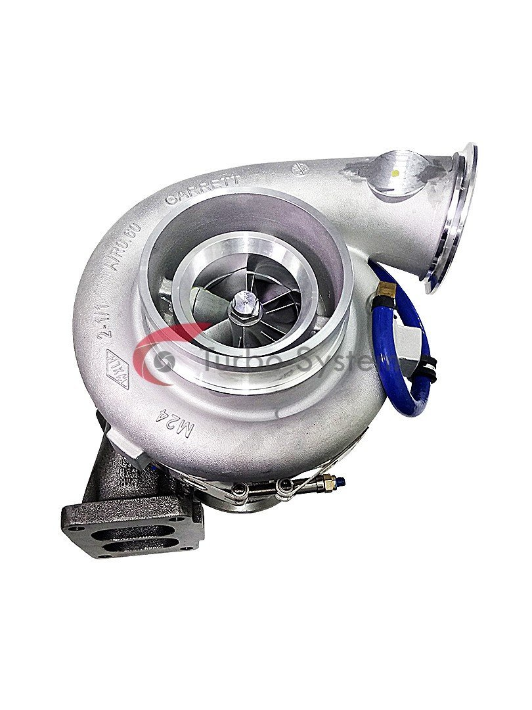

TURBO
supercargador
amortiguador

filtro
|  | TURBO |
|
|
|
|
|
|
1.- Verificar que haya una correcta circulación de lubricante en su motor. 2.- Utilice juntas y empaques nuevos en el múltiple de escape, así como en las conexiones de entrada y salida de aceite. |
|
Te comparto algunas marcas de turbo. Aparte de turbos, MasterTurbo también suministra intercoolers de la marca NRF, (Nederlandse Radiateuren Fabriek). BorgWarner. MasterTurbo lleva años suministrando toda la gama de turbos de BorgWarner. ... Holset. ... Garrett. ... Continental. ... Mitsubishi. ... IHI. ... Mahle. ... Schwitzer.
Te comparto dos de mis líneas de marcas favs: |